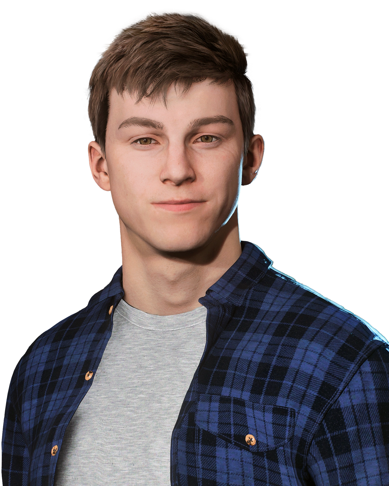
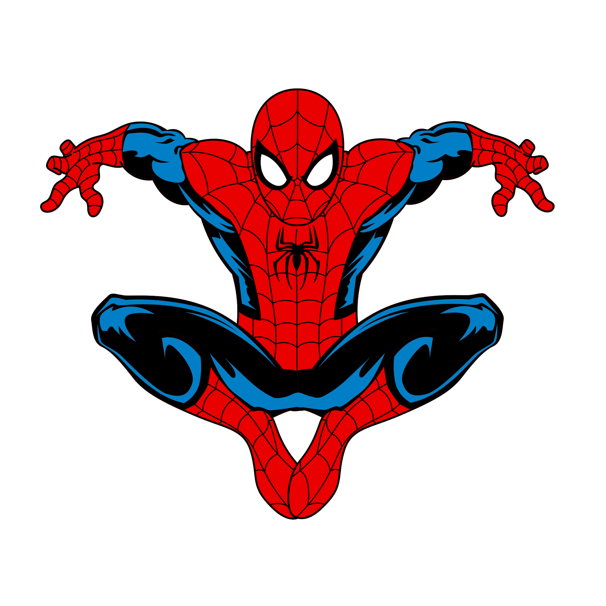

Abutre / Adrian Toomes
Adrian é um idoso que usa um traje de pássaro para roubar bancos. Ele não possui poderes, somente armas.
O Homem-Aranha é um super-herói de Nova Iorque (Estados Unidos). Ele lança teias e tem uma agilidade muito avançada, podendo sentir ameaças mesmo quando elas estão longe. Mas por trás da máscara, o nome dele é Peter Parker, que tem Mary Jane como namorada, Harry Osborn como melhor amigo e May Parker como sua tia.

O traje tradicional do aranha é um uniforme vermelho e azul com listras pretas, além de lançadores de teia que ficam debaixo do traje.

Como foi falado brevemente, Peter possui alguns poderes. Dependendo do multiverso, alguns Homens-Aranha possuem teias orgânicas, mas todos têm 4 poderes em comum:
O Homem-Aranha já derrotou vários inimigos, mas estes são os principais:
Adrian é um idoso que usa um traje de pássaro para roubar bancos. Ele não possui poderes, somente armas.
O objetivo de Connors era recuperar o braço usando DNA de répteis, mas virou um lagarto humano com garras, presas, rabo forte e fator de cura.
Max era um eletricista que sofreu um acidente e ganhou poderes de eletricidade, capaz de criar raios e rajadas de energia.
Rino foi rodeado com raios gama, tendo uma força colossal comparável à do Hulk.
William sofreu um acidente que fez seu corpo se transformar em areia, permitindo moldar sua forma como quiser.
Seus tentáculos mecânicos dão a ele força aumentada, reflexos rápidos e capacidade de combater vários inimigos.
Injetou o soro do duende, ganhando superforça e insanidade, além de usar seu planador e bombas de abóbora.
A fusão do simbionte Klyntar com Eddie Brock. Possui superforça, projeção de teias orgânicas e garras venenosas.